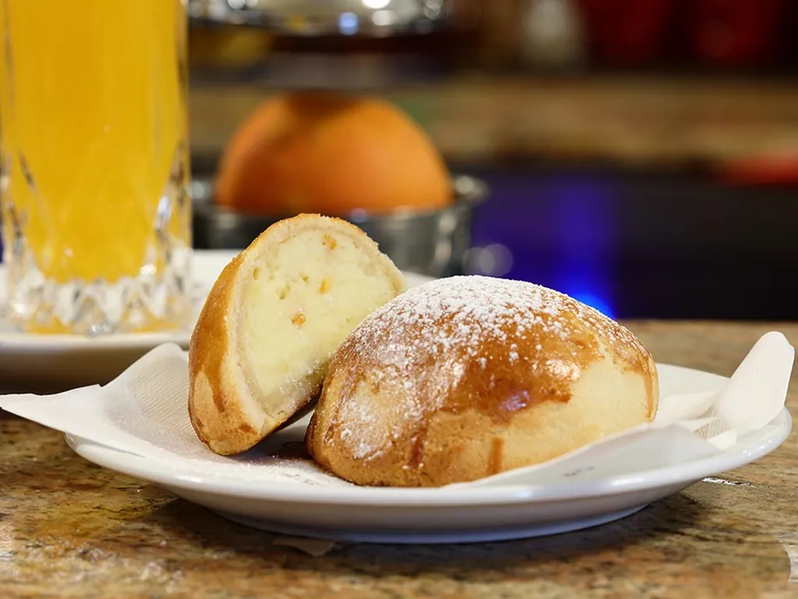

La colazione a Napoli: cornetto, sfogliatella o graffa?
In piedi al bancone, in pochi minuti, con il profumo del forno. Guida alla colazione napoletana, tra classici italiani e dolci della città.

In Italia la colazione al bar è un piccolo rito quotidiano: un cappuccino o un caffè, un cornetto caldo, due parole con il barista. A Napoli questo rito si arricchisce dei dolci della città, e la scelta al bancone diventa più difficile.
La colazione all'italiana
La colazione all'italiana è dolce e veloce. Al centro c'è il cornetto, vuoto o farcito con crema, cioccolato o marmellata, accompagnato da un cappuccino, un caffè o una spremuta. Accanto ci sono la brioche, più soffice e ricca di uova, e i lievitati sfogliati come il pain au chocolat e il kranz.
Cornetto, brioche o croissant?
Le parole cambiano da una regione all'altra. Al Nord molti chiamano "brioche" quello che al Centro e al Sud è il cornetto. Cornetto e croissant hanno un antenato comune, il kipferl viennese, ma sono diversi: il croissant francese non ha uova e ha più burro, il cornetto italiano ha un impasto arricchito con uova e burro, più morbido e profumato.
Una leggenda racconta che il kipferl sia nato a Vienna nel 1683, per festeggiare la fine dell'assedio ottomano, con la forma della mezzaluna. È una bella storia, ma il kipferl è documentato già secoli prima.
La colazione napoletana
A Napoli al cornetto si affiancano i dolci della tradizione: la sfogliatella riccia o frolla, appena sfornata; la graffa, una ciambella fritta e zuccherata dall'impasto morbido; il babà per chi ama i sapori decisi fin dal mattino. E naturalmente il caffè, corto e denso, servito nella tazzina calda.
Come ordinare al bancone
- Si ordina e si paga, spesso prima alla cassa e poi al banco.
- Il cappuccino è una bevanda del mattino: dopo pranzo si passa al caffè.
- Se c'è fila, si beve in piedi e si lascia il posto: la colazione al bar è rapida per definizione.